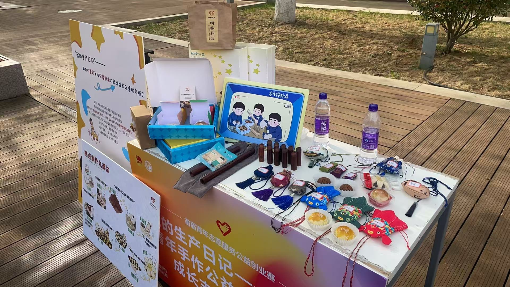

Autism Support Project

Background
This project focuses on play-based therapy and sensory interaction to assist autistic youth. It explores how tangible, hands-on making activities can create a safe and engaging environment for those who struggle with traditional forms of communication.
Problem
Autistic youth often face significant challenges with nonverbal expression, leading to misunderstandings and emotional frustration. External audiences, including caregivers and peers, frequently lack the intuitive tools to decode these unique expressive states.
Approach
By utilizing guided, hands-on making activities, the project empowers users to externalize their emotions. These abstract expressions are then translated into clear visual information—such as illustrations, labels, and structured text—bridging the communication gap and fostering better understanding for external audiences.
